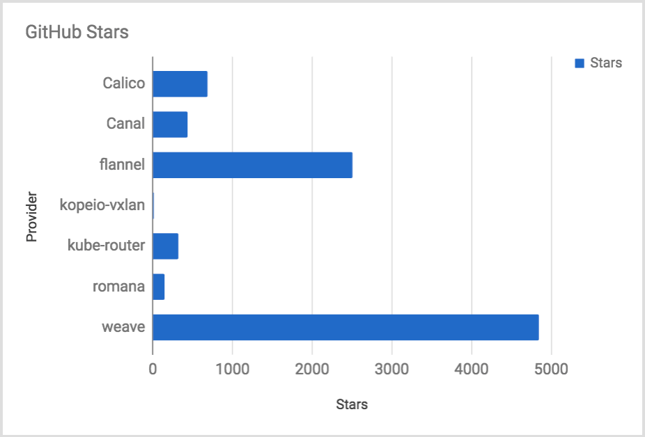
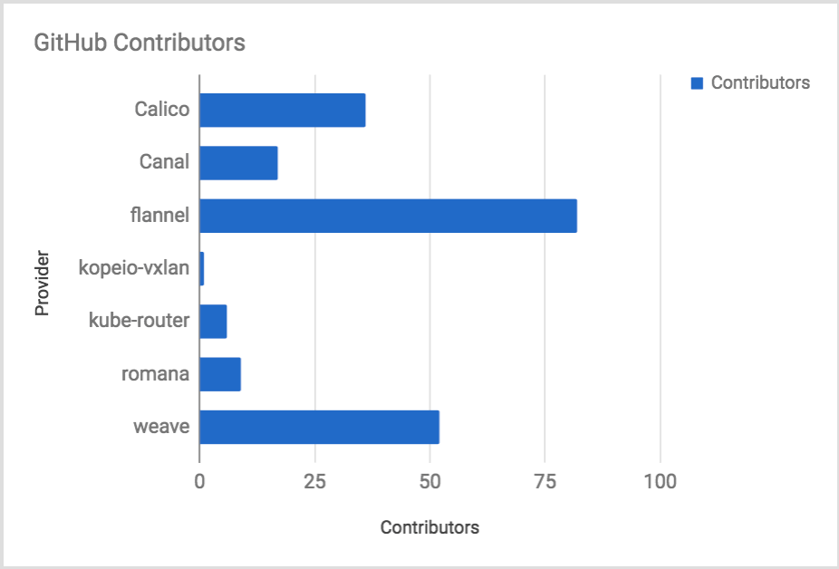
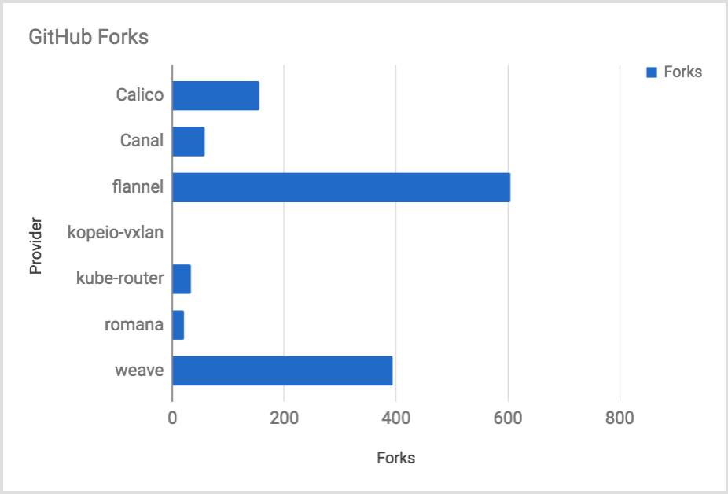

choosing-a-cni-provider
容器网络接口（CNI）是一个库定义，是Cloud Native Computing Foundation项目保护下的一组工具。有关更多信息，请访问他们的GitHub 项目。Kubernetes使用CNI作为网络提供商和Kubernetes网络之间的接口。
Why Use CNI
Kubernetes默认网络提供商kubenet是一个简单的网络插件，可与各种云提供商合作。Kubenet是一个非常基本的网络提供商，基本是好的，但没有很多功能。此外，kubenet有许多局限性。例如，在AWS Cloud中运行kubenet时，您只能使用50个EC2实例。路由表用于配置Kubernetes节点之间的网络流量，每个VPC限制为50个条目。此外，无法在专用VPC中设置群集，因为该网络拓扑使用多个路由表。其他更高级的功能，如BGP，出口控制和网状网络，仅适用于不同的CNI提供商。
Choosing a Provider
Which CNI provider should I use?
CNI in kops
最后统计，除了kubenet之外，kops还支持七种不同的CNI提供商。有以下
- Calico
- Canal (Flannel + Calico)
- flannel
- kopeio-vxlan
- kube-router
- romana
- Weave Net
任何这些CNI提供者都可以在没有kops的情况下使用。所有CNI提供程序都使用守护程序安装模型，其产品部署Kubernetes Daemonset。一旦K8s API服务器启动，只需使用kubectl在主服务器上安装提供程序。请参阅每个项目的具体文档。
Summary of the Providers
Calico
Mike Stowe提供了Calico和Canal的摘要。
Calico使用纯L3方法提供简单，可扩展的网络。它支持在支持它的环境中的本机，未封装网络，包括AWS，AZ和其他在节点之间具有L2邻接的环境，或者在可以使用BGP与基础架构对等的部署中，例如内部部署。Calico还提供无状态IP-in-IP模式，如有必要，可在其他环境中使用。除了可扩展的网络，Project Calico还提供策略隔离，允许您使用高级入口和出口策略保护和管理您的微服务/容器基础架构。通过广泛的Kubernetes支持，您可以在Kubernetes 1.8+中管理您的策略。
Canal
Canal是一家CNI提供商，为您提供最好的Flannel和Project Calico，提供简单，易用/开箱即用的VXLAN网络，同时还允许您利用Calico策略的策略隔离。
对于想要在利用他们可能已经使用的熟悉技术的同时启动和运行的任何人来说，此提供商都是一个解决方案
flannel
flannel是一种简单易用的方法，可以配置为Kubernetes设计的layer3网络结构。没有外部数据库（使用Kubernetes API），简单的性能可以在VXLAN默认的任何地方工作，可以与Calico策略引擎（Canal）分层。哦，还有很多用户。
Coreco的商业Kubernetes产品Tectonic，使用flannel和来自Calico的Felix ，就像Canal一样。
kopeio-networking
kopeio-networking提供Kubernetes第一个网络。它是专为Kubernetes而设计的，充分利用了Kubernetes API，因此比改装的替代品更简单，更可靠。VXLAN方法是最常用的模式（用于编织和法兰绒），但它也支持第2层（用于印花布），更多实验性支持GRE（替代IPIP）和IPSEC（用于安全）配置）。它通过非常简单的代码库完成所有这些工作
kube-router
Kube-router是专为Kubernetes打造的专用网络解决方案。它旨在提供操作简单性和性能。Kube-router提供pod网络解决方案，服务代理和网络策略实施器作为一体化解决方案，并设置了单个守护进程。Kuber-router使用Kubernetes本机功能，如注释，由kube-controller-manger分配pod CIDR。因此它不依赖于数据存储，也没有为节点的pod CIDR分配实现任何自定义解决方案。Kube-router也使用标准的CNI插件，因此需要任何额外的CNI插件。Kube-router建立在标准的Linux网络工具集和ipset，iptables，ipvs和lvs等技术之上。
romana
Romana为pod网络使用标准的第3层网络。Romana支持Kubernetes网络策略API，即使群集跨网络可用区域分割，也不需要覆盖。Romana支持各种网络拓扑，包括平面第2层和路由第3层网络。节点之间的路由在本地安装，必要时使用BGP或OSPF分发到网络设备。在AWS部署中，Romana将聚合路由安装到VPC路由表中以克服50节点限制。这使Romana可以跨HA集群的可用区域使用本机VPC网络。当前版本使用自己的etcd集群，但下一个版本可选择允许Kubernetes etcd集群用作数据存储。
Weave Net
Weave Net支持覆盖网络，可以跨越不同的云网络配置，简化Kubernetes上运行的旧工作负载。例如，Weave支持多播，即使底层网络没有。Weave可以在AWS上运行时配置基础VPC网络并绕过覆盖。此提供程序形成可分区且最终一致的主机网状网络; 这意味着设置几乎为零配置，并且它不需要依赖Etcd。Weave支持加密和Kubernetes网络策略，确保网络级别具有安全性。
GitHub Stars

GitHub Contributors

GitHub Forks

Support Matrix
|Provider |Network Model|Route Distribution|Network Policies|Mesh|External Datastore|Encryption Ingress/Egress Policies |Commercial Support|
|———|———|———|———|———|———|———|———|———|
|Calico |Layer 3 |Yes | Yes | Yes |Etcd| Yes| Yes |Yes|
|Canal |Layer 2 vxlan| N/A| Yes |No|Etcd |No| Yes| No|
|flannel |vxlan |No |No |No| None |No |No |No|
|kopeio-networking |Layer 2 vxlan | N/A | No| No| None| Yes| No| No|
|kube-router |Layer 3 |BGP |Yes| No| No| No| No| No|
|romana |Layer 3 |OSPF |Yes| No |Etcd |No |Yes |Yes|
|Weave Net |Layer 2 vxlan| N/A |Yes| Yes |No| Yes |Yes| Yes|
- Calico和Canal包含一个直接连接到Kubernetes的功能，而不是使用Etcd。
- kopeio CNI提供商有三种不同的组网方式：vlan，layer2，GRE和IPSEC。
- kopie-network在IPSEC模式下提供加密，而不是默认的vxlan模式。
- Weave Net可以在没有vxlan的AWS-VPC模式下运行，但在EC2中仅限于50个节点。
- Weave Net没有开箱即用的出口规则。
Table Details
- Network Model
具有提供商的网络模型是封装网络（如VXLAN）或未封装的第2层网络。封装网络流量需要计算才能处理，因此理论上要慢一些。在我看来，大多数用例不会受到开销的影响。有关维基百科上的 VXLAN的更多信息 。
- Route Distribution
对于第3层CNI提供商，路由分发是必要的。路由分配通常通过BGP进行。如果您计划构建跨网段分割的群集，则路由分发很适合使用CNI功能。它是一种外部网关协议，旨在在互联网上交换路由和可达性信息。BGP可以协助群集之间的pod到pod联网。
- Network Policies
https://kubernetes.io/docs/concepts/services-networking/network-policies/
- Mesh Networking
此功能允许Kubernetes集群之间的“Pod to Pod”网络。这项技术不是Kubernetes联合会，而是Pods之间的纯粹网络。
- Encyption
加密网络控制平面，以便加密所有TCP和UDP流量。
- Ingress / Egress Policies
网络策略是Kubernetes和Non-Kubernetes路由控制。例如，许多提供商将允许管理员阻止与169.254.169.254上的EC2实例元数据服务进行通信的pod。